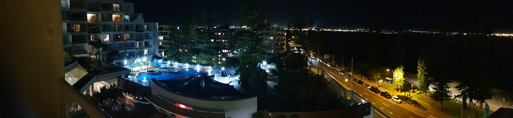

Overview
There are many types of cameras, each having their similarities and differences. We will be looking at DSLRs (Digital Single Lense Reflex camera) which use digital data storage instead of film, has a single lens means the camera is not a rangefinder (a camera that measures the distances for a sharper focus), and reflex meaning the light entering the lens can be directed either to the sensor or the viewfinder (the eye hole in the camera).
The features of a DSLR camera
Resolution
The sharpness/detail of the photo (the higher number of pixels the higher the resolutions)
Flash type
Is the extra light needed to shoot in low-light conditions, most digital cameras have built in lens
Burst mode Where multiple photos are taken at once
Optical zoom
Allows a camera to get a closer image(2x,3x,4x, etc.)
Lens
The lens length will determine how much of a scene will fit into a picture some cameras have fixed focus lens which are present to focus at a certain range.
Focus
Most cameras have auto focus but higher end cameras will include a manual focus capability.

Notice Camera focusing on the guy on white but not the person on the left.
Autofocus
Is the feature of a camera that tries to ensure that your chosen subject is sharp within the photo. Sensors detect how far away the subject is from the camera and this information is relayed to the lens.
Exposure
Is the amount of light that goes in the lense. This is determined by shutter speed
AR Filter
Commonly used in smartphones allowing external images to be in a picture.

Panoramic image, allow us to see a wide view of an image